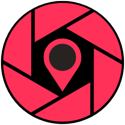
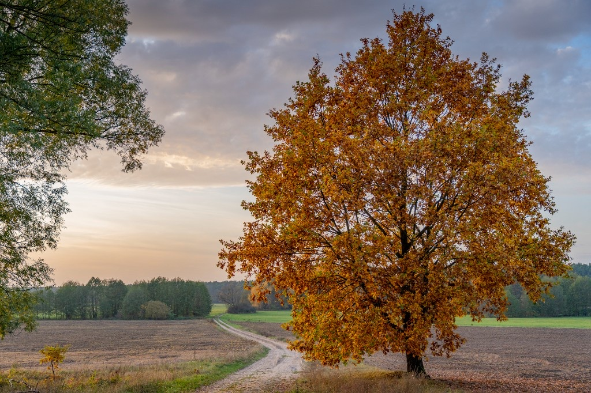

53.0258° N 16.3597° E
Mapy Google ↗
01
Nad Bukówką.
Pomost nad jeziorem na ścieżce przyrodniczo-leśnej „Nad Bukówką”. Nadleśnictwo Trzcianka. Wejdź na kładkę i idź dalej strzałkami.


Wirtualne spacery ścieżek dydaktycznych, obiektów turystycznych i natury — na Mapach Google.
01 — Główna korzyść
Zanim ruszysz, wiesz już, dokąd idziesz
i na co się przygotować.
A gdy się zgubisz — zawsze się odnajdziesz.
idź strzałkami · rozglądaj się
51.9216° N 15.4709° E
Mapy Google ↗02 — Spacer
Jesienna droga, Nadleśnictwo Zielona Góra. Ten sam las, który potem otworzysz w Mapach — tu możesz iść pierwszy raz.
53.0258° N 16.3597° E
Mapy Google ↗Pomost nad jeziorem na ścieżce przyrodniczo-leśnej „Nad Bukówką”. Nadleśnictwo Trzcianka. Wejdź na kładkę i idź dalej strzałkami.
51.9235° N 15.4826° E
Mapy Google ↗Tablica na ścieżce „Do wieży”. Zdjęcie sferyczne montuję, a samą tablicę fotografuję osobnym ujęciem — żeby napis był ostry i miał możliwie najwyższą jakość.
03 — Rezerwacja
Najpiękniejsze zdjęcia wychodzą wczesną wiosną, latem i jesienią. Jeśli zależy Ci na aurze zimowej — też jestem otwarty i z przyjemnością podejmę się tego wyzwania.
04 — Kontakt